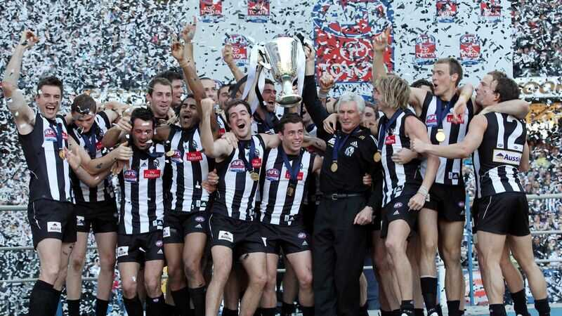

Collingwood Football Club

Collingwood players on the victory dias after winning the 2010 AFL premiership.
Learn more about the Collingwood Football Club by visiting the official website.
Collingwood players on the victory dias after winning the 2010 AFL premiership.